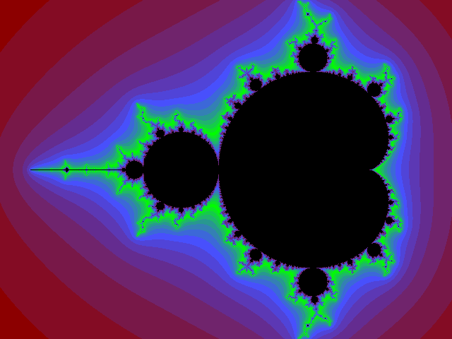
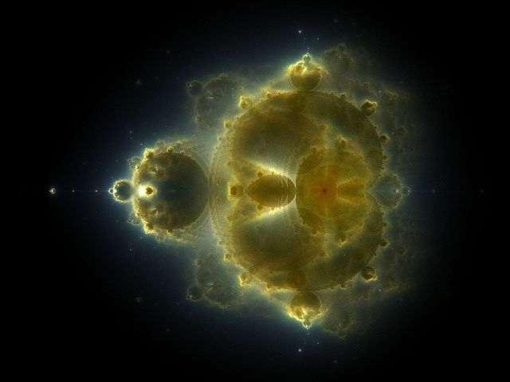

The Mandelbrot Set is defined as the set of complex numbers $c$
for which the following sequence does not tend to infinity as $n$
increases for $z_0=0$.
$$z_{n+1} = z_n^2 + c$$
When rendering an image of the Mandelbrot Set, in addition to coloring all points within the set,
diverging points are colored according to how many iterations are necessary for them to exceed a certain absolute value.
For instance, in the following image pixels are colored according to how many iterations are required such that $|z_n| > 10^3$.
Each color transition corresponds to one additional iteration.

Source: Wikipedia
While this technique already results in endlessly intricate patterns, it throws away a lot of the complexity that arises from the Mandelbrot sequence, namely
the trajectories of $z_n$ for a given $c$.
Buddhabrot
Unlike the Mandelbrot Set, Buddhabrot does not refer to a set, or any clearly defined mathematical
structure for that matter (although potentially it could be formalized as some kind of distribution\).
Instead, it refers to a kind of algorithmic/mathematical painting technique parametrized by max escape iterations and
min escape iterations.
Initialize a 2D array of integers representing points on the complex plane.
Randomly sample a point $c$ from the complex
Iterate the Mandelbrot equation using the sampled $c$ until $|z_n|>2$ or $n=\text{max escape iterations}$
If $|z_n|>2$ for some $n \leq \text{max escape iterations}$, then the series diverges.
In this case, if we also have $argmin_n(|z_n|>2) \geq \text{min escape iterations}$, all entries of our 2D array that overlap with the trajectory should be increased by 1.
Otherwise we cannot be sure that the sequence diverges, and we do nothing.
Go back to step 2 until satisfied.
In a nutshell, for randomly sampled $c$ for which the Mandelbrot sequence diverges, we paint the trajectories on the complex canvas.
The range of trajectory lengths defined by max escape iterations and
min escape iterations lets us control what kinds of sequences are drawn. Longer escape trajectories
lead to more elaborate patterns. Then, the trick is to use different colors for different trajectory ranges.
This technique can be used to create these 'Nebulabrot' images.

Source: Wikipedia
Specifically, Nebulabrot images can be achieved by setting the max escape iterations value to
20 for blue, 200 for green and 2000 for red. Also, to get similar results to the picture seen above, some kind
of smoothing filter probably has to be applied to the pixel map.
{kind=link}
{kind=link}